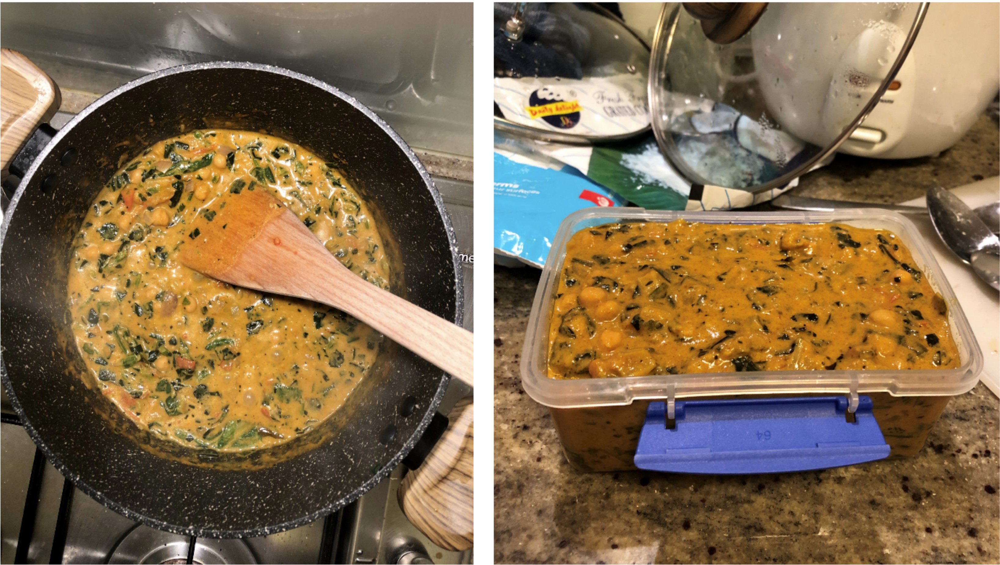

Chai's Chickpea Spinach Curry

Submitted by: Charuni Pathmeswaran
Background
This is a recent discovery of mine (by recent, I mean a few days ago!). I was looking for a quick recipe that would be easy to make on a weekday evening. I hadn’t eaten chickpeas in a while, and I love adding spinach to anything I possibly can. So, I Googled ‘Chickpea Spinach Curry’, checked out three recipes and then selected the one that felt closest to my style of cooking. It’s super easy to make and vegan friendly! 😊
Original Recipe: Spice Bangla, with blog post
Ingredients
- 1 can of chickpeas (the original recipe called for 500g of boiled and drained chickpeas. The can I used, had 420g and it was good enough)
- 1 cup of coconut milk
- 150g of spinach
- 2 Tbsp cooking oil
- 1 large onion (chopped)
- 2 Tbsp Ginger and Garlic paste
- 2/3 pieces green chillies (chopped)
- 1 Tsp red chili powder
- 1 Tsp cumin powder
- 1 Tsp coriander powder
- 1 Tsp turmeric powder
- ½ Tsp garam masala
- 1 Tsp salt
- 2 large tomatoes (chopped)
Instructions
- On medium heat, place a cooking pot and add 2 tbsp. cooking oil
- Add one large, chopped onion and saute until translucent
- Add 2 tbsp. of garlic and ginger paste and cook for about 1 minute or until fragrant
- Add 2 or 3 chopped green chillies and cook.
- Add 1 tsp. chili powder + 1 tsp. cumin powder + 1 tsp. coriander powder + 1 tsp. turmeric powder + ½ tsp. garam masala + 1tsp. salt and cook for few seconds with onions mix.
- Drain the water in the canned chickpeas and add this to the mix to incorporate all the spices’ taste (If you’re not using canned chickpeas, you can add ¼ cup of water in this step). Cook well for 1-2 minutes until oil separates from the gravy.
- Add two large, chopped tomatoes, and cook until they start to break down in the gravy.
- Add the chickpeas into the gravy mix + 1 cup of coconut milk.
- Mix well and bring it to boil.
- Cover the chickpeas and simmer for 10 minutes on medium-low heat.
- Finally add the spinach and cook for 2-3 minutes until the spinach is completely cooked.
- Serve with rice or bread.
Reader-Contributed Makes
Submitted by Katrin Meinsser